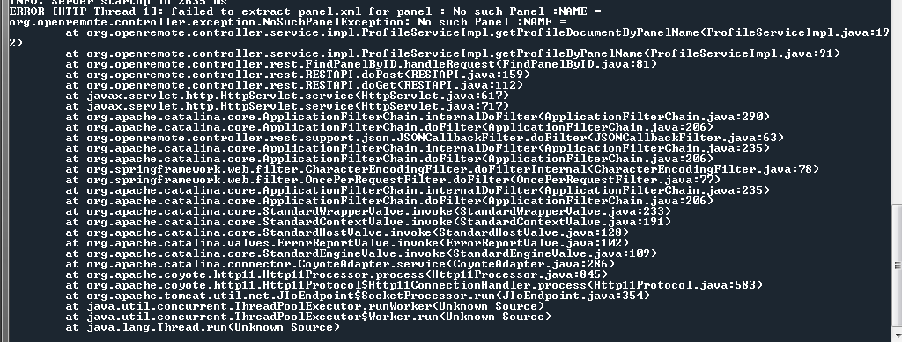

I was finally able to get my OR controller working and am in the process of integrating my DSC panel using the Envisalink 3. I followed all of the steps in the tutorial and built a UI using the designer, however I am not able to interact with the DSC system. I have pasted an excerpt of the log file below. I tried changing the applicationContext.xml as described here (http://openremote.org/display/forums/Support+for+other+DSC+interfaces), and the result was that I could not sync my controller or connect with the webconsole. I returned the xml file back to the default and functionality of the controller and webconsole returned.
2013-10-28 19:14:39,325 WARN [Controller Definition File Watcher for Default Deployer]: Unknown DSCIT100 property '<property name = "name" value = "System Status"/>'.
2013-10-28 19:14:39,325 INFO [Controller Definition File Watcher for Default Deployer]: Instantiating new ReadCommand instance - [STATE:type=PARTITION, target=1, address=108.72.75.78]
2013-10-28 19:14:39,325 INFO [Controller Definition File Watcher for Default Deployer]: Created DSCIT100 Command [STATE:type=PARTITION, target=1, address=108.72.75.78]
2013-10-28 19:14:39,326 INFO [Controller Definition File Watcher for Default Deployer]: Registered sensor : Sensor (Name = 'System Status', ID = '119', State Mappings: {NOTREADY=Not Ready to Arm, ARMED_AWAY_NODELAY=Armed Away ND, ENTRYDELAY=Entry Delay, ALARM=Alarm, EXITDELAY=Exit Delay, BUSY=Busy, ARMED_STAY_NODELAY=Armed Stay ND, ARMED_STAY=Armed Stay, READY=Ready to Arm})
2013-10-28 19:14:39,327 INFO [Controller Definition File Watcher for Default Deployer]: Registered sensor : Sensor (Name = 'Upstairs Windows', ID = '117', State Mappings: {OPEN=Open, RESTORED=Ready, FAULT=Fault})
2013-10-28 19:14:39,327 INFO [Polling Sensor Thread ID = 119, Name ='System Status']: Started polling thread for sensor (ID = 119, name = System Status).
2013-10-28 19:14:39,328 INFO [Polling Sensor Thread ID = 117, Name ='Upstairs Windows']: Started polling thread for sensor (ID = 117, name = Upstairs Windows).
2013-10-28 19:14:39,328 INFO [Controller Definition File Watcher for Default Deployer]: Registered sensor : Sensor (Name = 'Master Windows', ID = '116', State Mappings: {OPEN=Open, FAULT=Fault, READY=Ready})
2013-10-28 19:14:39,333 INFO [Controller Definition File Watcher for Default Deployer]: Registered sensor : Sensor (Name = 'Front Windows', ID = '115', State Mappings: {OPEN=Open, RESTORED=Ready, FAULT=Fault})
2013-10-28 19:14:39,334 INFO [Controller Definition File Watcher for Default Deployer]: Registered sensor : Sensor (Name = 'Family Windows', ID = '114', State Mappings: {OPEN=Open, RESTORED=Ready, FAULT=Fault})
2013-10-28 19:14:39,334 INFO [Controller Definition File Watcher for Default Deployer]: Registered sensor : Sensor (Name = 'Back Door', ID = '113', State Mappings: {OPEN=Open, RESTORED=Ready, FAULT=Fault})
2013-10-28 19:14:39,334 INFO [Polling Sensor Thread ID = 114, Name ='Family Windows']: Started polling thread for sensor (ID = 114, name = Family Windows).
2013-10-28 19:14:39,335 INFO [Controller Definition File Watcher for Default Deployer]: Startup complete.
2013-10-28 19:14:39,337 ERROR [Polling Sensor Thread ID = 116, Name ='Master Windows']: Couldn't get I/O for the connection
java.net.ConnectException: Connection refused: connect
at java.net.DualStackPlainSocketImpl.waitForConnect(Native Method)
at java.net.DualStackPlainSocketImpl.socketConnect(Unknown Source)
at java.net.AbstractPlainSocketImpl.doConnect(Unknown Source)
at java.net.AbstractPlainSocketImpl.connectToAddress(Unknown Source)
at java.net.AbstractPlainSocketImpl.connect(Unknown Source)
at java.net.PlainSocketImpl.connect(Unknown Source)
at java.net.SocksSocketImpl.connect(Unknown Source)
at java.net.Socket.connect(Unknown Source)
at org.openremote.controller.protocol.dscit100.DSCIT100ConnectionManager.buildIPConnection(DSCIT100ConnectionManager.java:150)
at org.openremote.controller.protocol.dscit100.DSCIT100ConnectionManager.getConnection(DSCIT100ConnectionManager.java:94)
at org.openremote.controller.protocol.dscit100.DSCIT100Command.read(DSCIT100Command.java:168)
at org.openremote.controller.protocol.dscit100.ReadCommand.read(ReadCommand.java:150)
at org.openremote.controller.model.sensor.Sensor$DeviceReader.read(Sensor.java:682)
at org.openremote.controller.model.sensor.Sensor$DeviceReader.run(Sensor.java:608)
at java.lang.Thread.run(Unknown Source)
{kind=link}
{kind=link}
{kind=link}
{kind=link}
{kind=link}
{kind=link}
|
Hi. I have been away from the forum for a while but that looks to me like you are using the original code for the IT100 and not my modified "Envisalink" code. I suspect that my code hasn't been integrated into the latest Controller yet? Thanks Phil |
|
How do I go about correcting this? |
|
Hi Clark, Which version of controller are you running? The latest 2.1 snapshots should include the changes Phil mentioned. – Juha |
|
Not sure the version, but assume its the latest. I just downloaded it off the web site. How do I confirm its 2.1, and if not where can I find it to download? |
|
I have 2.1 running but still have the same problem. Suggestions? |
|
I found where one of the sensors I had programmed was being rejected (even though it was programmed correctly and identical to all the others). Thinking that this may be causing/contributing to the problem, I deleted the sensor and the command it was based on and reprogrammed. Now, at least all of the sensors appear to be loading, but this did nothing to address the fact that I am still not getting a response back from the panel. I could use some help on this. Thanks. |
|
Connection refused problem would typically imply there's security enabled on the server. Check if you could disable it. |
|
Appreciate the suggestion, but I've already checked and verified the login info that's needed to open the connection (in the config.properties file). |
|
On a whim, I changed the port programming of the underlying command to include http://<ip address> (previously I only had the ip address), and I'm now getting a different response. It now looks like it is trying to use the wrong TCP port to access the Envisalink. I have left all port settings as the default for the OR (8080), and I don't see anywhere in the programming of the Envisalink to define this setting. Let me know if this helps anyone point me in a different direction. 013-11-03 09:09:28,829 ERROR [Polling Sensor Thread ID = 154, Name ='Back Door']: Invalid TCP port specified in command definition : [Ljava.lang.String;@677e3c9e 2013-11-03 09:09:28,829 ERROR [Polling Sensor Thread ID = 154, Name ='Back Door']: Unable to read [STATE:type=ZONE, target=2, address=http://108.72.75.78/] : For input string: "//108.72.75.78/" java.lang.NumberFormatException: For input string: "//108.72.75.78/" at java.lang.NumberFormatException.forInputString(Unknown Source) at java.lang.Integer.parseInt(Unknown Source) at java.lang.Integer.parseInt(Unknown Source) at org.openremote.controller.protocol.dscit100.DSCIT100ConnectionManager.buildIPConnection(DSCIT100ConnectionManager.java:132) at org.openremote.controller.protocol.dscit100.DSCIT100ConnectionManager.getConnection(DSCIT100ConnectionManager.java:94) at org.openremote.controller.protocol.dscit100.DSCIT100Command.read(DSCIT100Command.java:168) at org.openremote.controller.protocol.dscit100.ReadCommand.read(ReadCommand.java:150) at org.openremote.controller.model.sensor.Sensor$DeviceReader.read(Sensor.java:682) at org.openremote.controller.model.sensor.Sensor$DeviceReader.run(Sensor.java:608) at java.lang.Thread.run(Unknown Source) |
|
The address format is ipaddress:port. Hence the error. Note: if port is not specified, default is taken as 4025. |
|
Hi Clark, As Anand says, there seems to be a misunderstanding on the configuration of the IP address and port in your Designer. Use string '108.72.75.78' (without the quotes, without the 'http://' prefix or '/' suffix) or '108.72.75.78:5000' (change the port number as required). In other words, the http URL will not work. Just IP address alone (with optional port separated by ':') sign. HTH, – Juha |
|
With regards to your statement about ports, the OR port of 8080 should not be relevant to your DSC configuration. But your DSC port is relevant, and should be part of your DSC command configuration (ip:port). Just wanted to clear that part, not sure why you mentioned the OR port 8080 here. |
|
Anand, 2013-11-04 09:37:04,082 WARN Polling Sensor Thread ID = 159, Name ='System Status': Cannot find state type information for [StateDefinition: type=PARTITION, target=1] 2013-11-04 09:42:27,786 WARN HTTP\-Thread\-3: Unknown DSCIT100 property '<property name = "name" value = "Arm System"/>'.  |
|
Hi Clark. Have you followed the document here http://openremote.org/display/docs/OpenRemote+2.0+How+To+-+DSC+Alarm+Systems as this explains the commands etc available. This looks like you haven't created the correct sensors. Thanks Phil |
|
Yes, I have. Below are a couple of screenshots to verify. Also, I went back and reviewed the log file again and found the following 'Unknown Property' messages. Is it possible that I can't have spaces or the "-" character in the command name? 2013-11-04 13:39:09,235 WARN main: Unknown DSCIT100 property '<property name = "name" value = "Zone 2 - Back Door"/>'. |
|
Don't worry about the Unknown property warnings, they are simply a cosmetic issue that I thought I had removed. You are best to enable debug logging for the DSC interface. This will show much more information. I'm not sure if the specific DSC settings are in the log4j.properties file, if not add the following then restart OR. If you can post the whole dsc.log, i'm sure we can get to the bottom of the problem. Phil # --------------------------------------------------------------------------------------------- # # DSC SECURITY SYSTEM LOGGING # # Direct DSC security system logging to its own category. Currently DSC logging is all directed # into a single file. Set threshold (INFO, DEBUG, or other) accordingly. # # --------------------------------------------------------------------------------------------- # Enable all of DSC logging -- file log appenders may threshold which records they # want to include log4j.logger.OpenRemote.Controller.protocol.dsc = ALL, dsc-file # ---- DSC FILE LOG ------------------------------------------------------------------------------- # Log file will roll over (delete) old entries once maximum number of backup files # is reached (each file size is defined with MaxFileSize property) log4j.appender.dsc-file = org.apache.log4j.RollingFileAppender # Location of the log file log4j.appender.dsc-file.File = ../logs/dsc/dsc.log # Only log INFO or above. If you want more detailed log, set threshold to DEBUG. If you want # less detailed log, set threshold to WARN log4j.appender.dsc-file.Threshold = DEBUG # Maximum size of the log file log4j.appender.dsc-file.MaxFileSize = 500KB # Keep at most one backup file until older entries are deleted and written over. log4j.appender.dsc-file.MaxBackupIndex = 1 # Formatting of log records -- print priority (level) %p, date/time %d and message %m log4j.appender.dsc-file.layout = org.apache.log4j.PatternLayout log4j.appender.dsc-file.layout.ConversionPattern = %p %d (DSC): %m%n |
|
I entered in the info above into log4j.properties file, however upon restart it never created a dsc.log file. I then manually created the directory and an empty dsc.log file to see if it would append it, but it did not. I am assuming that the numerals listed in your post (1,2,3,4,5) should be replaced with # in order to match the format of the other log file entries. I also went back and compared the syntax of the log4j entries listed in your post to other log file entries to make sure that something wasn't input wrong. |
|
Yes sorry I should have used code markup to stop that, the numbers should be replaced by hashes. That is working for me and creating a log file, you could try replacing the line: log4j.logger.OpenRemote.Controller.protocol.dsc = ALL, dsc-file with log4j.logger.OpenRemote.Controller.protocol.dscit100 = ALL, dsc-file This should make the file: # --------------------------------------------------------------------------------------------- # # DSC SECURITY SYSTEM LOGGING # # Direct DSC security system logging to its own category. Currently DSC logging is all directed # into a single file. Set threshold (INFO, DEBUG, or other) accordingly. # # --------------------------------------------------------------------------------------------- # Enable all of DSC logging -- file log appenders may threshold which records they # want to include log4j.logger.OpenRemote.Controller.protocol.dscit100 = ALL, dsc-file # ---- DSC FILE LOG ------------------------------------------------------------------------------- # Log file will roll over (delete) old entries once maximum number of backup files # is reached (each file size is defined with MaxFileSize property) log4j.appender.dsc-file = org.apache.log4j.RollingFileAppender # Location of the log file log4j.appender.dsc-file.File = ../logs/dsc/dsc.log # Only log INFO or above. If you want more detailed log, set threshold to DEBUG. If you want # less detailed log, set threshold to WARN log4j.appender.dsc-file.Threshold = DEBUG # Maximum size of the log file log4j.appender.dsc-file.MaxFileSize = 500KB # Keep at most one backup file until older entries are deleted and written over. log4j.appender.dsc-file.MaxBackupIndex = 1 # Formatting of log records -- print priority (level) %p, date/time %d and message %m log4j.appender.dsc-file.layout = org.apache.log4j.PatternLayout log4j.appender.dsc-file.layout.ConversionPattern = %p %d (DSC): %m%n I know that the original plan was to start renaming the dscit100 protocol to dsc to reflect the fact that it supports different interfaces but that might not have made it into this update? Phil |
|
A little progress. I changed the protocol reference to dscit100. With it set this way, it will create the dsc directory and the dsc.log file, but the file is empty. I just tried copying and pasting your entire file excerpt into my properties file, again, just to be sure I hadn't fat fingered something or accidentally changed something in all my digging around. However, ON the last startup of the OR server, I noticed the following lines appear in the console. Could this exception point us in the right direction? I kinda feel like I'm running in circles. I appreciate all your help on this. Not sure why I can't get the dsc to capture a log file... |
|
After a little more digging, I've discovered that most of the log files are empty. I would expect that the HTTP.log file would contain some entries from when I use the webconsole, however it is empty. Not sure if it is related to why I'm not getting a dsc.log file. Also, when I launch the web console, I get the following error in the console: Again, not sure if any of this is related; just trying to provide as much info as possible to help determine what is going on with my system. |
|
Hi Clark, This last exception trace is not related to your issue, just an unfortunate side-effect to some work-around the web console uses. – Juha |
|
I think you overrode your previous screenshot but what I remember seeing there was a null pointer exception in the DSC packet constructor which appeared to be caused by an issue of getting a null string back from the host (the DSC system I assume). The constructor should use a better guard against nulls which is an issue in itself, although somewhat cosmetic. But the main cause seemed to be that, for some reason, a response string 'null' was returned from the DSC system. I didn't have time to look into it deeper and now the stack trace is gone too. But with all these errors it does seem there's something quite a bit different with your system compared to the ones the implementation was tested against. |
|
Thanks. The previous exception trace doesn't occur every time I start OR. I just started it back up to try and grab that screen shot again, and the only error I received was the cosmetic one for the web console. Let me know what other info is needed from my system to figure out the issue. Thanks. |
|
I hope Phil has an idea. I don't have a DSC system to test with myself so I'm just taking stabs in the dark based on reviewing the source and the stack traces you've posted. Looking at the code, we've messed up the logging though. It looks like it may be logging to a root category (which it shouldn't), if that's the case, can you try changing this line in the log4j.properties: log4j.logger.dscit100 = ALL, dsc-file And check if you now get something in the DSC log file. |
|
Still no logging. As a side note, I am also not getting any logging in the http.log file. I would assume there would be entries in this for the web console. |
|
I was able to capture the trace that showed the null return from DSC Exception in thread "Thread-3" java.lang.NullPointerException |
|
Figured I'd bump this. Phil or Juha, any ideas of how to make this work, or do I just abandon hope? I have tried deleting all DSC related sensors and commands and creating from scratch, just to see if it was a programming error or some type of corruption, but still no luck. As a side FYI, I tried an eval version of another HA application and was able to get the Envisalink to work, so at least I know it is not a harware issue. I appreciate any help. |